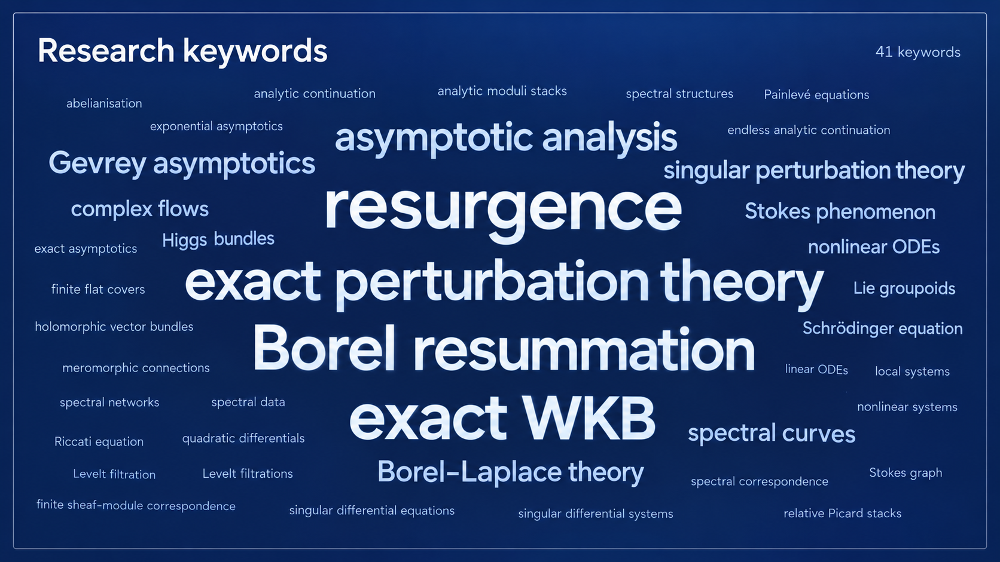
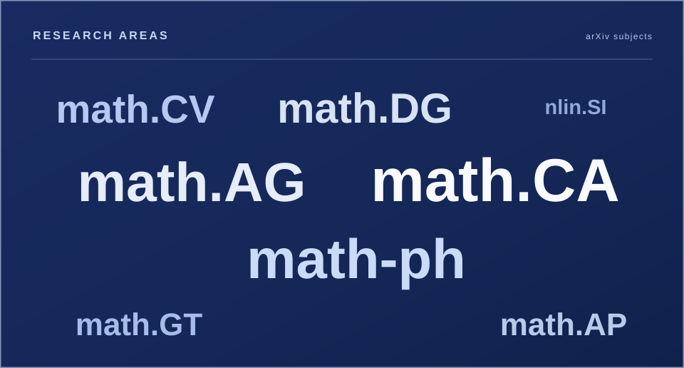
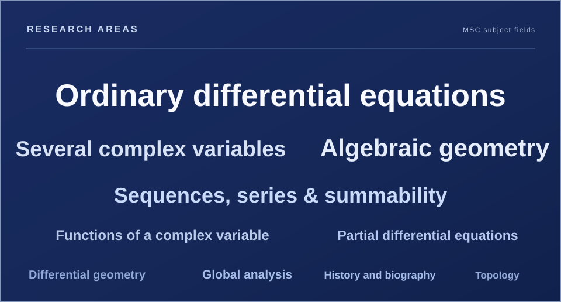
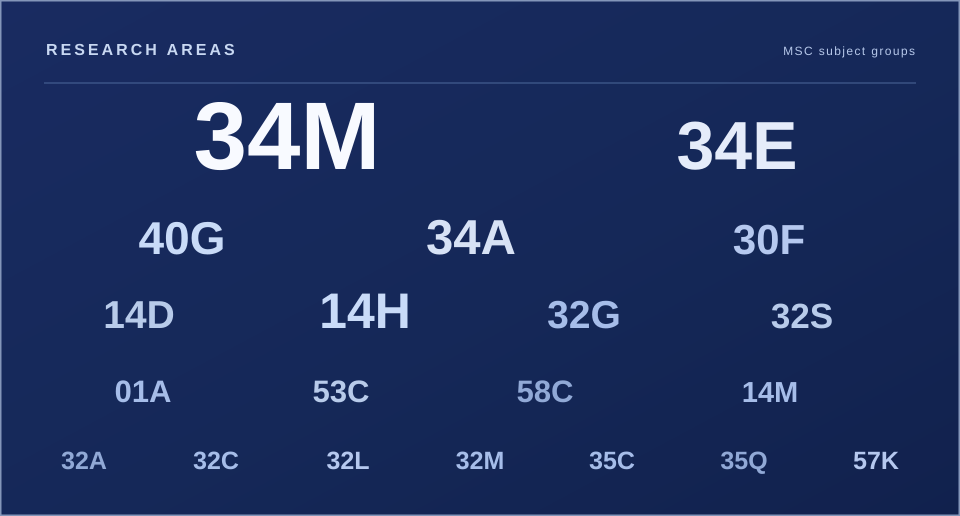
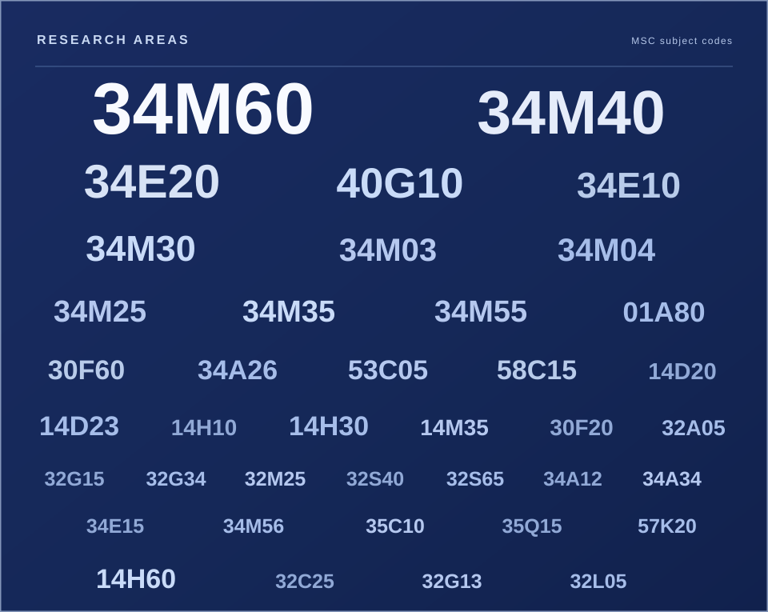

01 |Overview
Much of my research begins with differential equations on complex curves, viewed not merely as equations to solve but as geometric objects. A meromorphic connection, for instance, determines local differential equations while also carrying global information about vector bundles, singularities, and monodromy. Understanding how these descriptions fit together leads to questions about moduli spaces, spectral covers, asymptotics, and analytic continuation. I work at the intersection of algebraic and differential geometry, complex analysis, and mathematical physics, with an interest in extracting global structure from seemingly local data.
One guiding theme is abelianisation: replacing higher-rank, noncommutative information by rank-one data on an auxiliary spectral curve. In my work on logarithmic connections, this becomes a correspondence between suitable rank-two connections and abelian connections on a double cover. My current work on spectral structures takes the underlying geometric idea further. It asks how a vector bundle can carry an intrinsic spectral algebra, even in the absence of a distinguished endomorphism, and how such structures interact with line-bundle pushforwards and moduli spaces.
A second theme concerns a different passage—from formal solutions to actual analytic ones. Singularly perturbed equations often admit WKB series whose coefficients capture detailed asymptotics despite the series themselves being divergent. Exact WKB methods and Borel resummation can, under suitable conditions, turn these expansions into holomorphic solutions and make it possible to study their Stokes phenomena. I have worked on existence and uniqueness results for exact WKB solutions and on a geometric perspective on resurgence, in which spectral curves, complex flows, and holomorphic groupoids help describe analytic continuation and the singularities of Borel transforms.
These analytic developments also lead to Riemann–Hilbert problems: the reconstruction of solutions from their monodromy and jump data, particularly in the setting of Painlevé equations. A separate, more geometric strand studies decorated local systems and character varieties, where one organises monodromy representations and additional data into moduli spaces and categories. The two subjects meet through monodromy, but they ask different kinds of questions. Across these directions, I am interested in the relationship between local and global descriptions, and in the geometric mechanisms that make complicated analytic or nonabelian problems tractable.
02 |Research interests
Geometry of spectral structures and abelianisation
From nonabelian connections to rank-one data on spectral covers.
Moduli problems for connections are often nonabelian, but their spectral data can live on a covering curve where rank-one objects become available. In Abelianisation of Logarithmic sl₂-Connections, I constructed a functorial correspondence between a category of rank-two logarithmic connections on a complex curve and abelian logarithmic connections on an associated spectral double cover. A canonical cocycle of automorphisms of the direct-image functor plays a key role in constructing the inverse correspondence.
In Spectral Structures on Vector Bundles, I develop an intrinsic language for spectral geometry that records local eigenspace-like information without requiring a chosen global endomorphism. The paper identifies the analytic moduli stack of spectral structures with a universal relative Picard stack, proves the local existence of smooth spectral presentations for families of vector bundles, and describes their relationship with regular Higgs bundles. This is part of a broader programme on spectral geometry and abelianisation.
Geometric resurgence and exact WKB method
From formal asymptotic series to exact analytic solutions.
Singular perturbation problems produce formal expansions that need not converge, even when they encode the behaviour of genuine solutions. My work on exact WKB analysis establishes existence and uniqueness results for solutions of second-order differential equations in the complex domain, including Schrödinger equations and cases with both generic and closed WKB trajectories. The construction also gives Borel summability results and explicit formulas for Borel transforms.
In Geometry and Resurgence of WKB Solutions of Schrödinger Equations, I develop a global geometric approach to resurgence using spectral curves, complex flows of meromorphic vector fields, and holomorphic Lie groupoids. Rather than treating Borel singularities and Stokes rays only as features of formal asymptotic expansions, the approach seeks to understand them through the geometry of analytic continuation. Related work concerns exact perturbative solutions of nonlinear differential systems and the resurgence of formal tritronquée solutions of the deformed Painlevé I equation.
Riemann-Hilbert problems and the Stokes Phenomenon
Recovering analytic solutions from monodromy and Stokes data.
Across a Stokes direction, asymptotic descriptions of a differential equation can change even as the underlying analytic solutions persist. Riemann–Hilbert problems organise these changes by asking how analytic solutions can be reconstructed from prescribed monodromy and jump data. I am interested in this analytic viewpoint and in its interaction with exact WKB methods and isomonodromic equations.
In joint work on the Painlevé I system, we construct Borel-summed WKB wave matrices and analyse their Stokes jumps and direct monodromy. This leads to a normalised Riemann–Hilbert problem whose solutions are identified with rotated tritronquées. Here the emphasis is on the analytic reconstruction problem and its Stokes geometry, rather than on the geometry of the moduli space of local systems.
Decorated Local Systems and Character Varieties
Geometric and categorical descriptions of local systems and their moduli.
A different strand of my research concerns the geometry of local systems and character varieties. Whereas a Riemann–Hilbert problem asks for analytic solutions with specified monodromy, the emphasis here is on the spaces and categories that organise representations and their additional geometric structures. Markings, framings, filtrations, and decorations enrich the moduli problem in useful ways.
In Decorated Local Systems and Character Varieties, we develop a categorical framework for local systems on marked surfaces using representations of fundamental groupoids. This brings together several kinds of decorated and filtered local systems and accommodates geometric structures arising in the presence of irregular singularities.
03 |Research index
A thematic and bibliographic index of my research, drawn from the works listed on the Publications page.
Keywords

A consolidated vocabulary from the papers’ keyword lists. Closely related variants have been combined; the cloud is a curated visual selection.
Full keyword list60 terms
arXiv subjects

Count is the number of papers carrying each arXiv subject. Weighted gives the primary subject a weight of 3, and each secondary subject a weight of 1. The cloud uses these weighted totals.
Full arXiv subject list8 subjects
| Code | Description | Count | Weighted |
|---|---|---|---|
math.CA | Classical Analysis and ODEs | 7 | 13 |
math-ph | Mathematical Physics | 9 | 11 |
math.AG | Algebraic Geometry | 5 | 11 |
math.DG | Differential Geometry | 3 | 7 |
math.CV | Complex Variables | 4 | 6 |
math.AP | Analysis of PDEs | 2 | 4 |
math.GT | Geometric Topology | 2 | 4 |
nlin.SI | Exactly Solvable and Integrable Systems | 2 | 2 |
MSC 2020 classifications
MSC 2020 codes drawn from the papers and the additional magazine article. Count is the number of works carrying each code; Weighted gives the primary MSC code a weight of 2, and each secondary code a weight of 1.
Subject fields10 fields

All MSC 2020 assignments grouped by their first two digits, shown with both raw and weighted counts. A work can contribute several classifications to the same field; the tag-cloud lettering uses the weighted totals.
| Code | Description | Count | Weighted |
|---|---|---|---|
34 | Ordinary differential equations | 35 | 43 |
32 | Several complex variables and analytic spaces | 9 | 9 |
14 | Algebraic geometry | 8 | 9 |
40 | Sequences, series, summability | 4 | 4 |
30 | Functions of a complex variable | 2 | 3 |
35 | Partial differential equations | 2 | 2 |
01 | History and biography | 1 | 2 |
53 | Differential geometry | 1 | 2 |
58 | Global analysis, analysis on manifolds | 1 | 2 |
57 | Manifolds and cell complexes | 1 | 1 |
Subject groups20 groups

The second level of the MSC hierarchy groups individual codes under headings such as 34M (ordinary differential equations in the complex domain). Counts represent classification occurrences, so a single paper may contribute to a group more than once. The weighted column retains primary ×2 and secondary ×1.
| Group | Official MSC 2020 description | Count | Weighted |
|---|---|---|---|
34M | Ordinary differential equations in the complex domain | 25 | 32 |
34E | Asymptotic theory for ordinary differential equations | 8 | 8 |
14H | Curves in algebraic geometry | 4 | 5 |
40G | Special methods of summability | 4 | 4 |
34A | General theory for ordinary differential equations | 2 | 3 |
30F | Riemann surfaces | 2 | 3 |
14D | Families, fibrations in algebraic geometry | 3 | 3 |
32G | Deformations of analytic structures | 3 | 3 |
32S | Complex singularities | 2 | 2 |
01A | History of mathematics and mathematicians | 1 | 2 |
53C | Global differential geometry | 1 | 2 |
58C | Calculus on manifolds; nonlinear operators | 1 | 2 |
14M | Special varieties | 1 | 1 |
32A | Holomorphic functions of several complex variables | 1 | 1 |
32C | Analytic spaces | 1 | 1 |
32L | Holomorphic fiber spaces | 1 | 1 |
32M | Complex spaces with a group of automorphisms | 1 | 1 |
35C | Representations of solutions to partial differential equations | 1 | 1 |
35Q | Partial differential equations of mathematical physics and other areas of application | 1 | 1 |
57K | Low-dimensional topology in specific dimensions | 1 | 1 |
Subject codes38 codes

| Code | Description | Count | Weighted |
|---|---|---|---|
34M60 | Singular perturbation problems for ordinary differential equations in the complex domain (complex WKB, turning points, steepest descent) | 7 | 12 |
34M40 | Stokes phenomena and connection problems (linear and nonlinear) for ordinary differential equations in the complex domain | 5 | 7 |
34E20 | Singular perturbations, turning point theory, WKB methods for ordinary differential equations | 4 | 4 |
40G10 | Abel, Borel, and power series methods | 4 | 4 |
34E10 | Perturbations, asymptotics of solutions to ordinary differential equations | 3 | 3 |
34M03 | Linear ordinary differential equations and systems in the complex domain | 2 | 2 |
34M04 | Nonlinear ordinary differential equations and systems in the complex domain | 2 | 2 |
34M25 | Formal solutions and transform techniques for ordinary differential equations in the complex domain | 2 | 2 |
34M35 | Singularities, monodromy, and local behavior of solutions to ordinary differential equations in the complex domain, normal forms | 2 | 2 |
34M30 | Asymptotics and summation methods for ordinary differential equations in the complex domain | 2 | 2 |
34M55 | Painlevé and other special ordinary differential equations in the complex domain; classification, hierarchies | 2 | 2 |
01A80 | Sociology (and profession) of mathematics | 1 | 2 |
30F60 | Teichmüller theory for Riemann surfaces | 1 | 2 |
34A26 | Geometric methods in ordinary differential equations | 1 | 2 |
53C05 | Connections (general theory) | 1 | 2 |
58C15 | Implicit function theorems; global Newton methods on manifolds | 1 | 2 |
14D20 | Algebraic moduli problems, moduli of vector bundles | 1 | 1 |
14D23 | Stacks and moduli problems | 2 | 2 |
14H10 | Families, moduli of curves (algebraic) | 1 | 1 |
14H30 | Coverings of curves, fundamental group | 2 | 2 |
14H60 | Vector bundles on curves and their moduli | 1 | 2 |
14M35 | Character varieties | 1 | 1 |
30F20 | Classification theory of Riemann surfaces | 1 | 1 |
32A05 | Power series, series of functions of several complex variables | 1 | 1 |
32C25 | Analytic subsets and submanifolds | 1 | 1 |
32G13 | Complex-analytic moduli problems | 1 | 1 |
32G15 | Moduli of Riemann surfaces, Teichmüller theory (complex-analytic aspects in several variables) | 1 | 1 |
32G34 | Moduli and deformations for ordinary differential equations (e.g., Knizhnik-Zamolodchikov equation) | 1 | 1 |
32L05 | Holomorphic bundles and generalizations | 1 | 1 |
32M25 | Complex vector fields, holomorphic foliations, ℂ-actions | 1 | 1 |
32S40 | Monodromy; relations with differential equations and D-modules (complex-analytic aspects) | 1 | 1 |
32S65 | Singularities of holomorphic vector fields and foliations | 1 | 1 |
34A34 | Nonlinear ordinary differential equations and systems | 1 | 1 |
34E15 | Singular perturbations for ordinary differential equations | 1 | 1 |
34M56 | Isomonodromic deformations for ordinary differential equations in the complex domain | 1 | 1 |
35C10 | Series solutions to PDEs | 1 | 1 |
35Q15 | Riemann-Hilbert problems in context of PDEs | 1 | 1 |
57K20 | 2-dimensional topology (including mapping class groups of surfaces, Teichmüller theory, curve complexes, etc.) | 1 | 1 |
Co-authors
Co-authors of the works listed on the Publications page, counted by jointly authored work. Each collaborator is counted once per work.